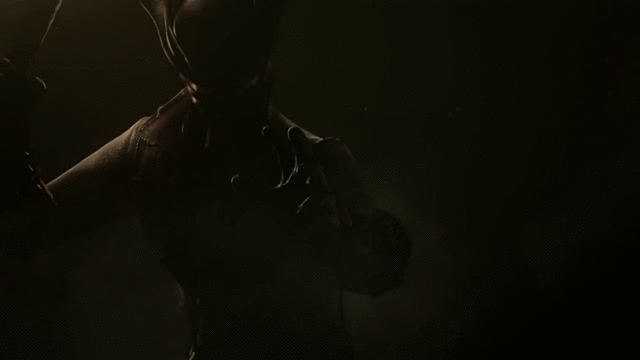

Gameplay
Introdução
Bloodborne se trata de um RPG, então obviamente ele apresenta características como, níveis de evolução, status, número de dano, defesa, etc. O conceito de RPG do jogo não é o que faz dele único e original, mas sim as suas mecânicas de combate e filosofia. Então o foco não será voltado para a parte RPG do jogo.
O gênero Soulslike foi introduzido pela primeira vez em 2009 com o lançamento deo jogo "Demon's Souls". As mecânicas e filosofia do jogo se tornaram famosas graças a sua alta dificuldade, com jogos sendo considerados por alguns quase impossíveis de se terminar. Com Bloodborne não é diferente, além de ter sido desenvolvido pela mesma empresa que iniciou o gênero, sua dificuldade está longe de ser casual e até mesmo pacífica.
A mecânica de combate e gameplay de Bloodborne pode parecer complexa, mas não é impossível de se dominar.
Combate
O combate de Bloodborne é relativamente mais dinâmico, flúido e rápido do que seus antecesores do gênero. A mestragem da esquiva e consciência dos padrões de ataque dos inimigos são as peças chaves do combate.
A gameplay se baseia em: ataque fraco, ataque forte, ataque carregado, esquiva, corrida, ataques viscerais, aparação de ataques, trava de mira, cura, utilização de itens adicionais, arremesáveis e truques de armas.
A trava de mira serve como principal utilidade do sistema de combate juntamento com os ataques e a esquiva. Além de focar no inimigo desejado, a direção dos ataques e movimentação também é modificada e direcionada ao inimigo, permitindo melhor mobilidade, visão e tempo de resposta do jogador.
Os ataques do personagem podem variar do mais simples ataque individual, até o mais complexo combo envolvendo esquivas, ataques, ataques carregados e mais. Os ataques causam dano com base nos atributos do personagem e podem aumentar com base na força do ataque ou diminuir com base na eficiência e durabilidade da arma.
Armas
Muitas das armas do jogo tem duas formas com séries de movimentos e ataques diferentes, esses tipos de armas são chamadas de Armas de truque. Todo caçador tem ao menos uma arma de truque e uma de fogo, ambas usadas na caça ás feras.
Também existem armas de fogo que são utilizadas à curto ou longo alcance. As de longo alcance são utilizadas comumente para causar dano ou atrair inimigos, já as de curto alcance infligem dano extrema e servem bem para aparar ataques.

Pode-se equipar duas armas primárias ao mesmo tempo. Apenas uma estará disponível a qualquer momento. Para total eficácia do caçador, deve-se selecionar duas armas que correspondam às estatísticas do seu personagem e se complementem, por exemplo: escolher uma arma rápida de curto alcance e uma arma lenta que tenha mais alcance.
Mecânicas Únicas
A morte
Contrariando os sistemas e mecânicas de outros jogos recentes, em Bloodborne, a morte está sempre presente na jornada e ela pode acabar com todo o progresso do jogador. Após morrer, todos os inimigos outrora derrotados reaparecem no mapa do jogo, com excessão de poucos inimigos e monstros únicos.
Ecos de Sangue
Ao longo do jogo, o jogador vai acumulando ecos de sangue, que servem como moeda ao longo da jornada. Na morte do jogador, esses eco são perdidos e ficam no local da morte do personagem. Para recupera-los, é necessário encontrar e pega-los novamente, mas tem um porém, pode-ser que algum inimigo próximo tome posse dos ecos, forçando o jogador à derrotar o inimigo novamente à fim de recuperar seu progresso.
Recuperação de vida
O sistema de recuperação de vida também é algo novo no gênero. Após sofrer dano de um golpe, ataque ou queda, o jogador tem um limite de tempo para revidar. Esse revide, se feito no tempo certo, recupera a vida personagem a cada golpe dado, assim forçando o jogador a ser agressivo na caçada às feras.
Mensagens
Devido a altíssima dificuldade do jogo, a confiança do jogador é abalada de diversas formas, e todas elas de forma brutal e ás vezes até mesmo surpreendente. Por isso, existem os mensageiros, pequenas criaturas que transportam mensagens online de outros jogadores. Essas mensagens também compõem um dos elementos principais do jogo.
Mensagens podem ser gravadas no chão do mundo de um jogador, e serem vistas em outro mundo, por outro jogador. Tais mensagens contém termos únicos que podem ajudar, identificar, informar ou até mesmo enganar outros jogadores.
Dificuldade
Bloodborne é um dos jogos mais difíceis dos últimos tempos. Seu combate, exige uma mente estratégica por parte do jogador, e um gerenciamento inteligente de posturas de combate. Ser ansioso e não saber dosar a agressividade pode resultar na morte do jogador, assim como o excesso de cuidado também. Tudo em Bloodborne é perigoso e traiçoeiro.
Essas novas e originais mecânicas transformam Bloodborne em um jogo único, com sistema e filosofia únicos que ao contrário de outros jogos do gênero, forçam os jogadores a ser agressivos, resilientes e cuidadosos nos momentos certos.
